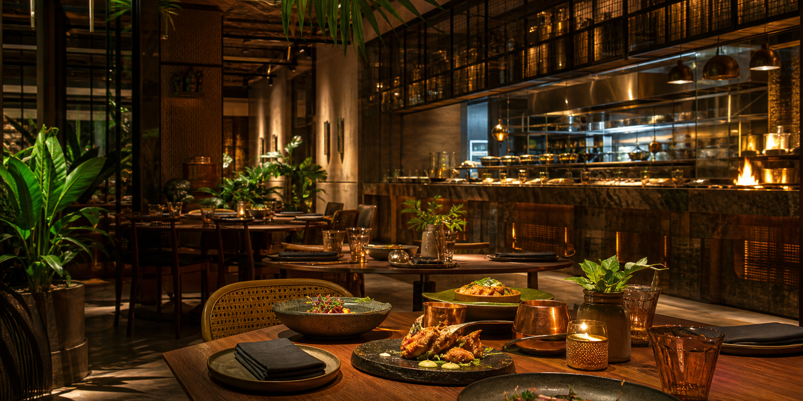

Respect the spice
We roast, grind, temper, and layer spices so dishes are aromatic, balanced, and never flat.
Our story
Rooted in Indian cooking, shaped by modern hospitality, and driven by a simple promise: serve food with memory.
How it began
Saffron & Sage started as a small supper club where friends gathered around slow curries, clay-oven breads, and handwritten menus. Today, the restaurant keeps that same generous spirit while adding technique, consistency, and a polished dining room.
Our team works with local farms, trusted spice merchants, and bakers who understand the rhythm of Indian meals. Every plate is built to feel familiar, but finished with a fresh point of view.

Our values
We roast, grind, temper, and layer spices so dishes are aromatic, balanced, and never flat.
Good service remembers names, preferences, allergies, celebrations, and the pace of the table.
Seasonal specials change often, but the heart of the restaurant stays steady and welcoming.
Milestones
Started as a weekend supper club with a 16-seat table.
Opened the first Saffron & Sage dining room.
Added chef's table dinners and private dining menus.
Launched a seasonal tasting menu and premium event service.